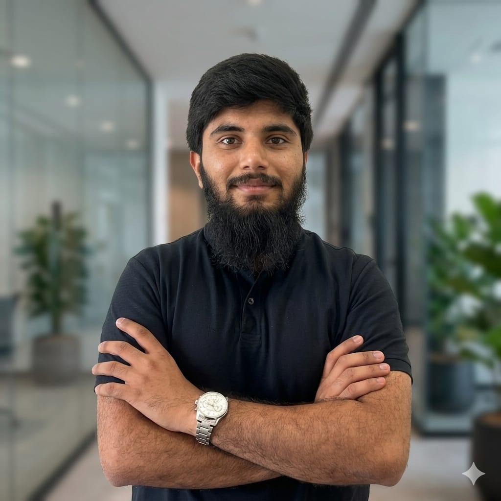

Muhammad
Hassaan Zeb

IT Systems Engineer · AI Developer · Technical Educator
I build things that are meant to be used — not just to work. Five years of teaching people how technology works has made me a more careful engineer, a more thoughtful designer, and someone who genuinely cares about the human on the other side of the screen.
I build things. I teach things. Usually both at once.
Somewhere around my second year of university, I realised that the best engineers I admired weren't just technically sharp — they could explain what they built in a way that made it feel obvious. I wanted to be that kind of person.
That's probably why teaching has been such a constant part of my life. For five years, I've been tutoring students — quietly, without a platform or marketing, just word of mouth from people whose understanding actually improved. It's taught me more about how technology works, and how people think, than any course I've taken.
My technical work has grown out of genuine curiosity: what happens when AI actually helps someone, not just when it technically functions? My capstone project, an AI-powered gym assistant, started from a simple question: what would a coach that actually listens look like as software? The projects that followed — a learning platform, a workflow system — asked similar questions about real institutional friction I'd watched up close as a Teaching Assistant.
I have graduated this year and joined Chorate AI at Qatar Science and Technology Park. I'm not sure exactly where things will go from here, but I'm genuinely excited to find out. I'm building in a region that's investing seriously in its digital future, and I want to be part of that.
The Journey
Not just what I did — but what I learned along the way.
Education
Four years that taught me far more than I expected — technically and otherwise.
Projects
Things I've built — some polished, some in progress. All of them started with a question I genuinely wanted to answer.
Skills
Things I've used to build real things — and things I'm still getting better at.
Beyond the Work
The things that aren't on a CV but probably shape how I work more than anything on it.
Message Me
For opportunities, collaborations, or quick questions, please reach out on LinkedIn or Instagram.
LinkedIn: Muhammad Hassaan Zeb
Instagram: @htb_blogs
I no longer use a web form for messages. Connect with me directly on social media for the fastest response.